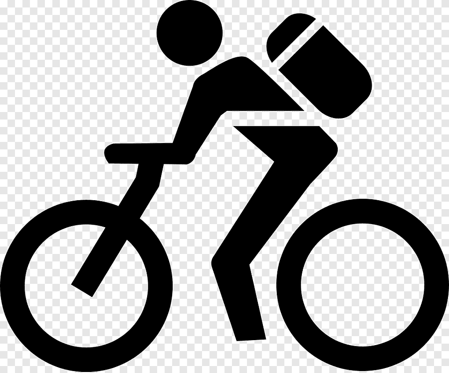

 Bicicleta de montaña
5/nov/2021
tipos de bicis
hay diferentes tipos de bicis y cada una se puede armar de manera diferente dependen los frenos que tengan y dependen demasiadas cosas yo te recomiendo que si vas empezando en la bici de montaña y no quieres gastar mucho dinero puedes comprar una kona rigida o una trek marin aunque no se vean bicis tan buenas te aseguro que para empezar son de los mejor con forme vayas mejorando puedes ir mejorando tu bici o comprarte una nueva.